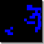

|  |
Tutorial 2: Life
By Sean Luke
|
[Tutorial 1 documentation] [Tutorial 2 documentation]
Tutorial 2 is a simple visualization of the John Conway's Game of Life, later popularized in a column by Martin Gardner. Life is a two-dimensional totalistic cellular automaton, where each cell in the grid simultaneously decides to be "alive" or "dead" based on the following rules:
- If a cell has less than live two neighbors (up/down/left/right -- no diagonal neighbors), is dead in the next iteration, presumably of loneliness.
- If a cell has more than three live neighbors, it is dead in the next iteration from suffucation.
- If a live cell has two or three live neighbors, it stays alive in the next iteration.
- If a dead cell has exactly three live neighbors, it comes alive in the next iteration.
The initial conditions of the automaton are set to Martin Gardner's so-called B-Heptomino. More on Life from Paul's Page and from MathWorld.
Where is Tutorial 1 in the simulation list? Tutorial 1 is a command-line example only, with no GUI.
Note: this description is different from the one which appears after following the tutorial documentation. This is because the tutorial documentation overrides the getInfo method to provide a description. If this method is not overridden, MASON instead tries to display a file called index.html stored in the same directory as the simulation (which is what's going on here).